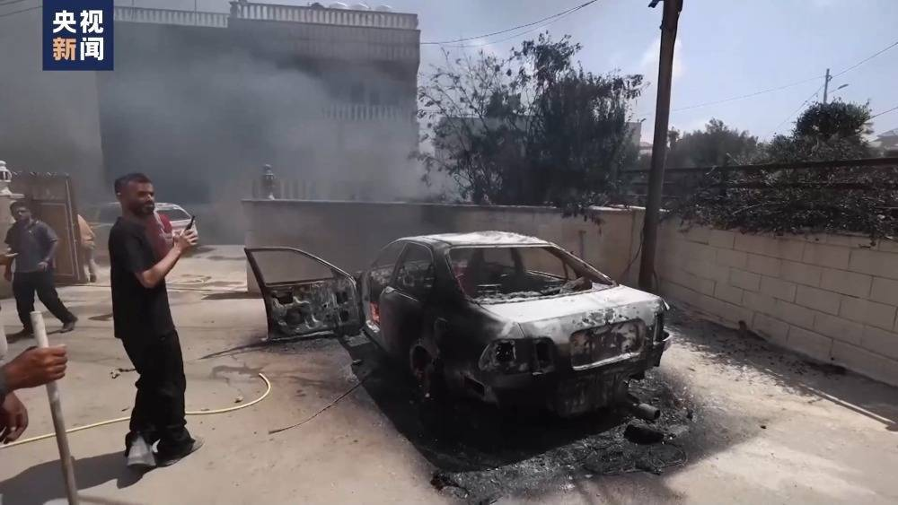
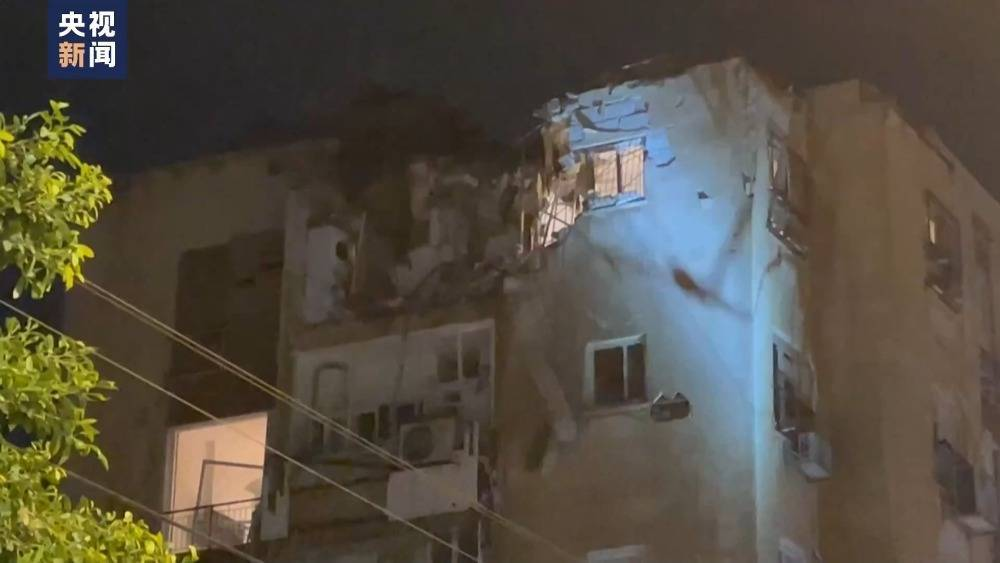

巴勒斯坦伊斯兰抵抗运动（哈马斯）当地时间7日宣布对以色列发动军事行动，不仅发射数
千枚火箭弹，其武装人员还进入以色列境内与以军发生冲突。以色列军队则对加沙地带展开
多轮空袭作为回应。

今年8月21日和9月27日，联合国中东和平进程特别协调员文内斯兰先后两次向安理会通报
巴以局势。他表示，今年以来巴以暴力冲突事件“急剧增加”，截至8月已经有200多名巴勒斯
坦人和近30名以色列人在双方的暴力冲突中丧生，死亡人数已经超过2022年全年。这是自
2005年以来巴以冲突死亡人数最多的一年，凸显了一段时间来在整个巴勒斯坦被占领土上
出现的“令人担忧的趋势”。
文内斯兰称，由于巴勒斯坦人和以色列人都对于推动和平进程感到希望渺茫，所以出现了一
个危险和动荡的真空状态，双方的极端分子乘虚而入，越来越多地使用致命武器，导致冲突
日益升级。他强调，当前的局势是几十年来从未有过的，巴以地区一触即发的政治和安全形
势令人极度担忧。尽管巴以双方都为稳定局势采取了措施，但一些“单方面行动”仍在继续，
尤其是以色列在其占领的东耶路撒冷以及约旦河西岸持续扩大定居点的行为令人深感忧虑。
仅仅在今年6月至9月，以色列就在这些地区新建了一万多套住房，而这严重违反了实现巴
以和平的两国方案的原则。

另有分析认为，在此前的2022年8月和2023年5月，以色列曾与巴勒斯坦伊斯兰圣战组织
（杰哈德）发生大规模冲突，但均在短期内结束。但由于哈马斯的军事力量明显强于杰哈
德，而且这次冲突是“有备而来”，预计本轮冲突不会在短期内结束。